NeurIPS 2025
Stochastic differential equations (SDEs) are well suited to modelling noisy and/or irregularly-sampled time series, which are omnipresent in finance, physics, and machine learning applications. Traditional approaches require costly simulation of numerical solvers when sampling between arbitrary time points. We introduce Neural Stochastic Flows (NSFs) and their latent dynamic versions, which learns (latent) SDE transition laws directly using conditional normalising flows, with architectural constraints that preserve properties inherited from stochastic flow. This enables sampling between arbitrary states in a single step, providing up to two orders of magnitude speedup for distant time points. Experiments on synthetic SDE simulations and real-world tracking and video data demonstrate that NSF maintains distributional accuracy comparable to numerical approaches while dramatically reducing computation for arbitrary time-point sampling, enabling applications where numerical solvers remain prohibitively expensive.
Stochastic differential equations (SDEs) capture the noisy dynamics of robotics, finance, climate systems, and modern generative models. Real deployments demand forecasts across arbitrary gaps, and evaluations must remain fast enough for control or analysis loops.
Solver-based neural SDEs approximate these transitions by threading hundreds of computational steps, such as Euler–Maruyama, so the cost grows linearly with the horizon. This makes long-range or densely queried predictions difficult to deploy.
We propose Neural Stochastic Flows (NSFs) that side-step numerical integration by learning the transition density $p_\theta(x_t \mid x_s; \Delta t)$, where $x_s$ and $x_t$ are states at times $s$ and $t$ with $s < t$, and $\Delta t := t - s$ is the time gap, in a single pass. The animation shows the solver baseline we replace and what NSF models.
Following the derivation in the paper, Neural Stochastic Flows inherit the axioms of stochastic flows when viewed as weak solutions. The learned transition density $p_\theta(x_t \mid x_s; s, \Delta t)$ is trained to satisfy:
For any $0 \le t_1 \le \dots \le t_n$, the conditionals $p_\theta(x_{t_{k+1}}\mid x_{t_k}; t_k, t_{k+1}-t_k)$ are mutually independent.
Realised by the architecture: each transition conditions only on $(x_s, s, \Delta t)$ and draws independent Gaussian noise, matching the independence assumption in the paper.
Evaluating at zero gap recovers the input state: $p_\theta(x_t \mid x_s; s, 0) = \delta(x_t - x_s)$.
Realised by the architecture: every coupling layer carries an explicit $\Delta t$ factor so the transformation collapses to the identity as $\Delta t\to 0$.
Shaped by the bidirectional flow regulariser introduced in Flow Consistency Regularisation.
When the underlying SDE is time-homogeneous, $p_\theta(x_{t_j}\mid x_s; t_i, t_j - t_i)$ depends on the gap only: $p_\theta(x_{t_j}\mid x_s; t_i, t_j - t_i)=p_\theta(x_{t_j+r}\mid x_s; t_i + r, t_j - t_i)$.
Realised by the architecture: for autonomous SDEs we drop the absolute time $t_i$ from the conditioner so the transition depends only on the gap.
The conditional flow operator remains available in closed form, $$p_\theta(x_t \mid x_s; s, \Delta t)=\int \delta\bigl(x_t - f_\theta(x_s, s, \Delta t, \varepsilon)\bigr)\,\mathcal{N}(\varepsilon; 0, I)\,\mathrm{d}\varepsilon,$$ which enables likelihood-based training and solver-free sampling.
NSFs approximate the weak solution $p_\theta(x_t \mid x_s; s, t - s)$ by transforming Gaussian noise through conditional coupling flows. The architecture encodes the elapsed time $\Delta t$ explicitly so that transformations collapse to the identity as $\Delta t \to 0$, preserving the identity and Markov properties inherited from stochastic flows.
Sampling recipe. Draw $\varepsilon \sim \mathcal{N}(0, I)$ and initialise
$$z = x_s + \Delta t\, \mu_\theta(x_s, s, \Delta t) + \sqrt{\Delta t}\, \sigma_\theta(x_s, s, \Delta t) \odot \varepsilon,$$
then apply stacked coupling flows $x_t = f_\theta(z; x_s, s, \Delta t)$, whose learnable parameters vanish as $\Delta t \to 0$.
This guarantees identity and Markov consistency while keeping the log-Jacobian available for likelihood training.
To guarantee that recursive application of NSF matches its one-step predictions, we optimise a bidirectional KL flow loss that enforces the Chapman–Kolmogorov property. An auxiliary bridge distribution provides tractable variational bounds, so training balances coverage (forward KL) and sharpness (reverse KL) without resorting to expensive sampling.
Because every transformation is invertible, the transition log-density remains available in closed form, enabling joint optimisation of likelihood and flow consistency.
Real-world observations are often partial and irregular in time. Latent NSFs embed NSFs inside a variational state-space model: the latent transition kernel is solver-free and conditioned on $\Delta t$, while encoders and decoders handle noisy measurements. Skip-KL objectives compare multi-step NSF rollouts with amortised posteriors so that inference remains calibrated across varying gaps. This design inherits all NSF benefits (closed-form likelihoods and arbitrary-step sampling) within a probabilistic latent variable framework.
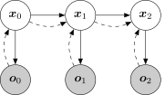
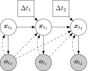
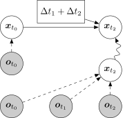
NSF matches the ground-truth attractor while remaining solver-free. Independent one-step samples stay on the correct manifold, unlike solver-based neural SDEs that either diffuse or collapse when rolled forward.
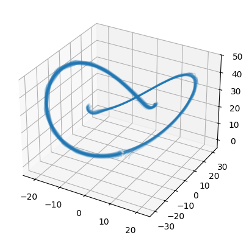
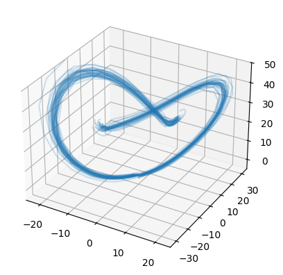
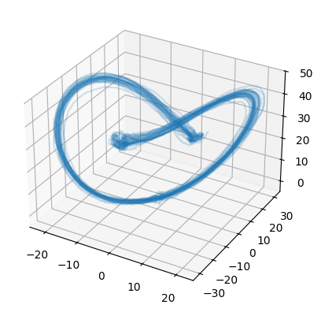
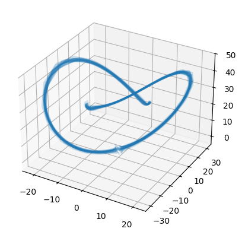
| Method | t = 0.25 | t = 0.5 | t = 0.75 | t = 1.0 | ||||
|---|---|---|---|---|---|---|---|---|
| KL ↓ | kFLOPs ↓ | KL ↓ | kFLOPs ↓ | KL ↓ | kFLOPs ↓ | KL ↓ | kFLOPs ↓ | |
| Latent SDE (Li et al., 2020) | 2.1 ± 0.9 | 959 | 1.8 ± 0.1 | 1,917 | 0.9 ± 0.3 | 2,839 | 1.5 ± 0.5 | 3,760 |
| Neural LSDE (Oh et al., 2024) | 1.3 ± 0.4 | 1,712 | 7.2 ± 1.4 | 3,416 | 74.5 ± 24.6 | 5,057 | 53.1 ± 29.3 | 6,699 |
| Neural GSDE (Oh et al., 2024) | 1.2 ± 0.4 | 1,925 | 3.9 ± 0.3 | 3,848 | 20.2 ± 7.6 | 5,698 | 14.1 ± 8.4 | 7,548 |
| Neural LNSDE (Oh et al., 2024) | 1.7 ± 0.4 | 1,925 | 4.6 ± 0.7 | 3,848 | 57.3 ± 16.4 | 5,698 | 44.6 ± 23.4 | 7,548 |
| SDE matching (Bartosh et al., 2024) | ||||||||
| Δ t = 0.0001 | 4.3 ± 0.7 | 184,394 | 5.3 ± 1.0 | 368,787 | 3.4 ± 0.8 | 553,034 | 3.8 ± 1.0 | 737,354 |
| Δ t = 0.01 | 6.3 ± 0.4 | 1,917 | 11.7 ± 0.5 | 3,834 | 7.9 ± 0.3 | 5,677 | 6.0 ± 0.3 | 7,520 |
| NSF (ours) | ||||||||
| $ \mathcal{H}_{\mathrm{pred}} = 1.0$ | 0.8 ± 0.7 | 53 | 1.3 ± 0.1 | 53 | 0.6 ± 0.3 | 53 | 0.2 ± 0.6 | 53 |
| $ \mathcal{H}_{\mathrm{pred}} = 0.5$ | 2.4 ± 1.9 | 53 | 1.3 ± 0.1 | 53 | 1.0 ± 0.4 | 105 | 1.7 ± 1.1 | 105 |
| $ \mathcal{H}_{\mathrm{pred}} = 0.25$ | 1.2 ± 0.7 | 53 | 1.2 ± 0.1 | 105 | 0.8 ± 0.4 | 156 | 1.3 ± 0.8 | 208 |
Average runtime per 100 samples (JAX): latent SDE 124–148 ms; NSF 0.3 ms.
Latent NSF delivers the strongest extrapolation accuracy while remaining orders of magnitude faster than solver-based latent SDEs. Setup 1 evaluates within-horizon forecasting, and Setup 2 withholds the final third of each sequence during training.
| Method | Setup 1 | Setup 2 |
|---|---|---|
| npODE (Heinonen et al., 2018) | 22.96† | — |
| Neural ODE (Chen et al., 2018) | 22.49 ± 0.88† | — |
| ODE2VAE-KL (Yildiz et al., 2019) | 8.09 ± 1.95† | — |
| Latent ODE (Rubanova et al., 2019) | 5.98 ± 0.28* | 31.62 ± 0.05§ |
| Latent SDE (Li et al., 2020) | 12.91 ± 2.90♠ | 9.52 ± 0.21§ |
| Latent Approx SDE (Solin et al., 2021) | 7.55 ± 0.05§ | 10.50 ± 0.86§ |
| ARCTA (Course et al., 2023) | 7.62 ± 0.93‡ | 9.92 ± 1.82 |
| NCDSSM (Ansari et al., 2023) | 5.69 ± 0.01§ | 4.74 ± 0.01§ |
| SDE matching (Bartosh et al., 2024) | 5.20 ± 0.43♣ | 4.26 ± 0.35 |
| Latent NSF (ours) | 8.62 ± 0.32 | 3.41 ± 0.27 |
† reported by Yildiz et al. (2019); * reported by Rubanova et al. (2019); ‡ reported by Course et al. (2023); § reported by Ansari et al. (2023); ♠ our reproduction of Li et al. (2020) code: latent-sde-mocap; ♣ our reproduction of Bartosh et al. (2024) code: sde-matching-mocap.
Runtime per 100 samples (JAX): latent SDE 75 ms vs. Latent NSF 3.5 ms.
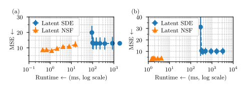
On video forecasting, Latent NSF preserves appearance quality while modelling stochastic futures. One-step sampling excels on static structure, and recursive rollout remains competitive on dynamics.
| Method | Static FD ↓ | Dynamics FD ↓ | Frame-wise FD ↓ |
|---|---|---|---|
| Latent SDE | 2.66 ± 0.87 | 5.39 ± 3.10 | 0.58 ± 0.21 |
| Latent NSF (recursive) | 2.36 ± 0.60 | 7.76 ± 2.56 | 0.63 ± 0.17 |
| Latent NSF (one-step) | 1.67 ± 0.47 | -- | 0.63 ± 0.15 |
Dynamics FD is undefined for one-step NSF because it predicts the marginal distribution rather than multi-step trajectories.
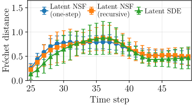
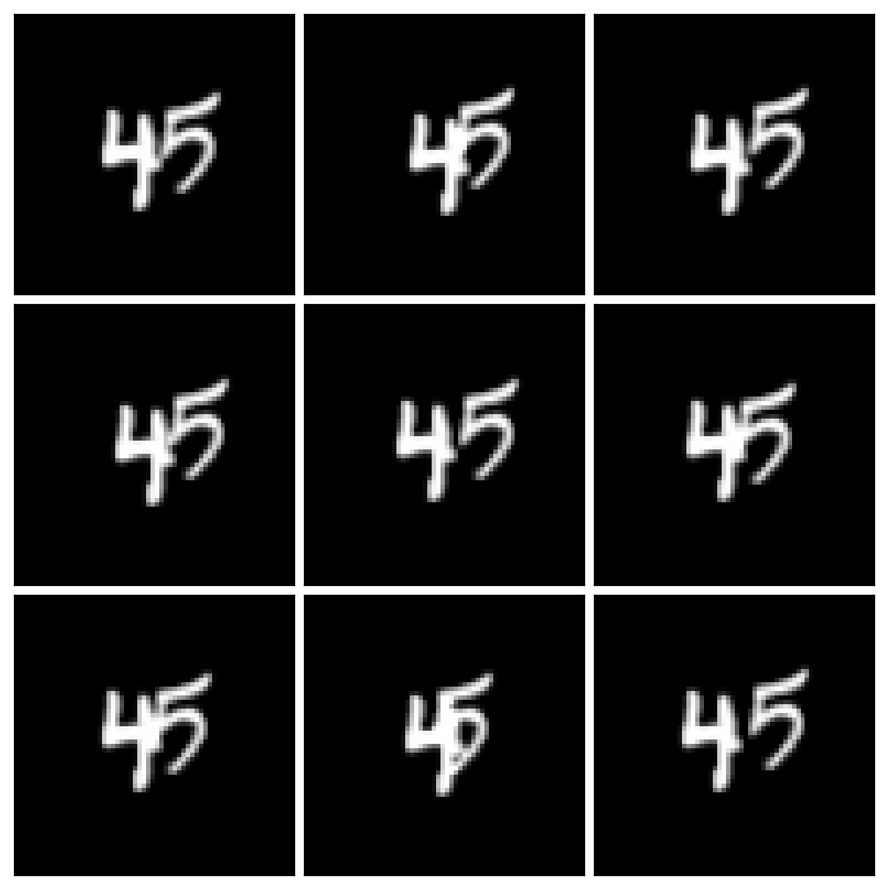
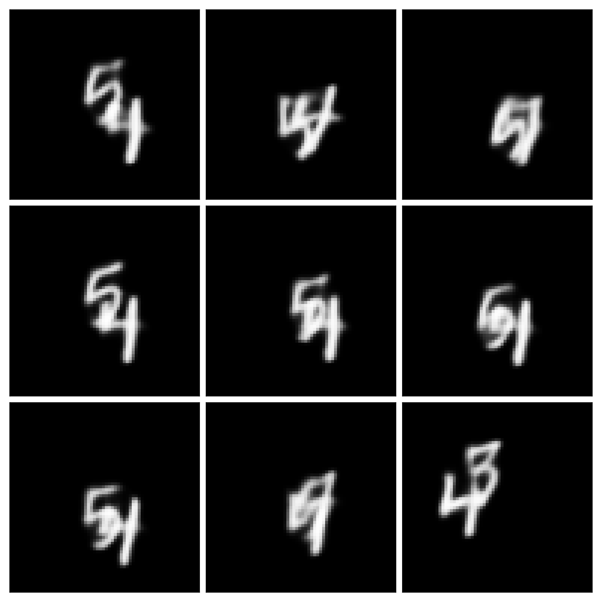
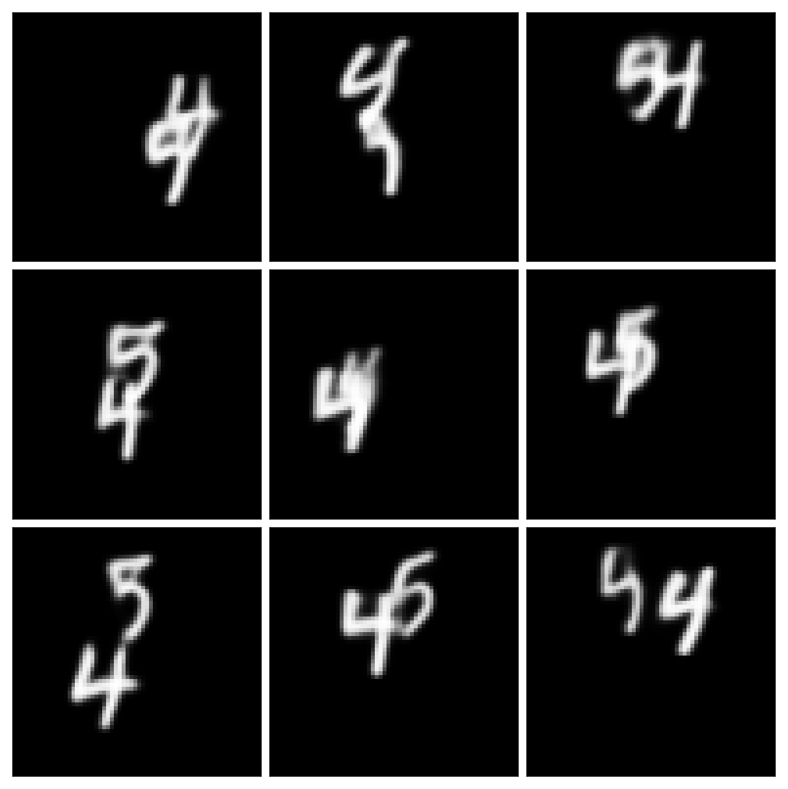
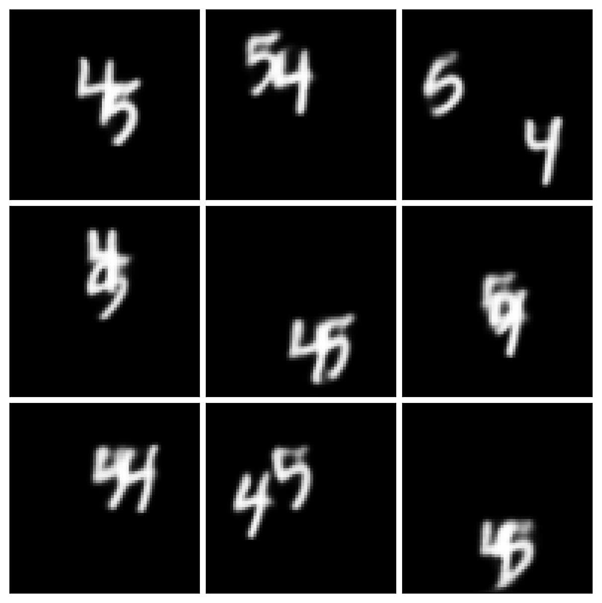
@inproceedings{kiyohara2025neural,
title = {Neural Stochastic Flows: Solver-Free Modelling and Inference for SDE Solutions},
author = {Naoki Kiyohara and Edward Johns and Yingzhen Li},
booktitle = {Advances in Neural Information Processing Systems},
year = {2025}
}